Visual novels on Linux¶
Video cutscene playback
Visual novels rely on Microsoft Media Foundation technology for video playback, something introduced in Windows Vista. Although AAA games can play videos fine, (because they use things like BINK Video and aren't reliant on a core Windows technology), video playback on visual novels (literal picture books) can be finnicky. Media Foundation has not been fully reimplemented in upstream Wine yet, and Proton provides no fixes or improvements to Media Foundation. Although you may see improvements by installing mf-fix/K-Lite Codec Pack/wmp9/wmp10/wmp11/lavfilters/ffdshow in your Wineprefix with Winetricks.
Visual novels are Microsoft Windows-only programs, therefore you must use Wine in order to run them on Linux. With huge progress and development being made in Linux gaming in recent years, this has gotten a lot easier and consistent.
Follow the steps below.
Requirements¶
The general requirements for running visual novels (which are Windows games, and thus are best ran with a version of Proton) include the following:
- Vulkan support
- Wine with all dependencies satisfied (including lib32 ones)
- Steam
- Lutris
- Proton-GE installed into Lutris
- A virtual CD-ROM utility if manual installation is required and/or no crack is available.
- ja_JP.UTF-8 locale generated
Vulkan Drivers¶
In order to run visual novels, or any game on Linux through Wine/Proton, your GPU must support Vulkan, and you must have the appropriate Vulkan drivers installed for your distribution and hardware. Refer to your distribution's wiki for more information on setting up Vulkan drivers.
Relevant Links:
Wine with all dependencies¶
You need to follow Glorious-Eggroll's How To Get Out Of Wine Dependency Hell guide.
Relevant Links:
Refer to your distribution's package repository if instructions for your distribution are not listed.
Do not forget about lib32 dependencies!
Steam Runtime¶
Install Steam if you haven't already. Refer to your distribution's package manager for more information.
Relevant Links:
Lutris¶
Lutris is a games launcher that will help us launch our visual novels. You can find instructions for how to install it on your distribution here.
ProtonUp-Qt¶
ProtonUp-Qt helps download, install and manage Proton versions.
Relevant Links:
Virtual CD-ROM utility: CDemu¶
This step is optional and is only required if:
- Your VN installation files are dumped to a disc image file (such as .mds, or .cdi) that is not mountable with standard tools.
- There is no NoDVD patch available for your VN
- You are trying to play your own ripped VNs and don't have access to the original disc(s) or a DVD drive.
- Similar to point #1 but, your game requires a reinstallation into the Wine prefix due to it requiring install info written to the Windows registry in order to run.
Relevant Links:
Generate ja_JP.UTF-8 locale¶
Uncomment the line ja_JP.UTF-8 UTF-8 in /etc/locale.gen and run sudo locale-gen.
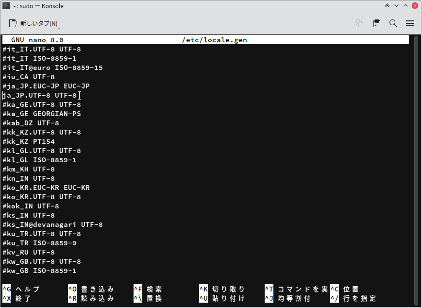
Relevant Links:
Setup¶
Install Proton-GE¶
After you have installed all the required packages, install Proton-GE with ProtonUp-Qt. Lutris will be able to see Proton versions installed into Steam, so don't worry about where to install it.
As compatibility with games can vary with different Proton-GE versions, use Proton-GE 9.10 for the same environment as this guide was tested on.
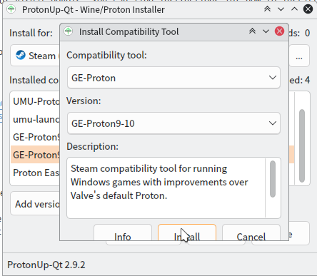
Install / Run the Visual Novel¶
What you need to do in Lutris now depends on whether the VN is already installed or not.

First, you need to mount the disc. If you own the disc, insert it into your DVD drive now. I recommend mounting through your desktop environment, but if you don't use a desktop environment, use mount to mount it to /media/cdrom.
If you have a copy of the disc dumped to either an .ISO, .MDS, .CDI or something similar, you need CDemu installed.
Mount your disc image with the following command:
cdemu load 0 /path/to/disc_image.mds
mount e.g. mount /dev/sr0 /media/cdrom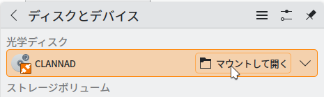
In Lutris, make sure you set the default Wine version for the Wine runner to the Proton-GE version you installed with ProtonUp-Qt.
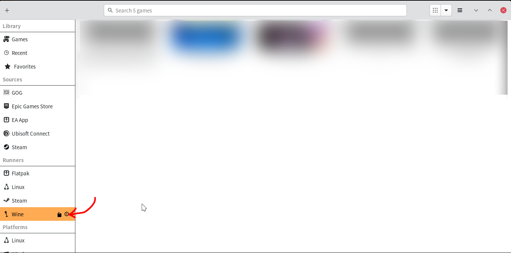 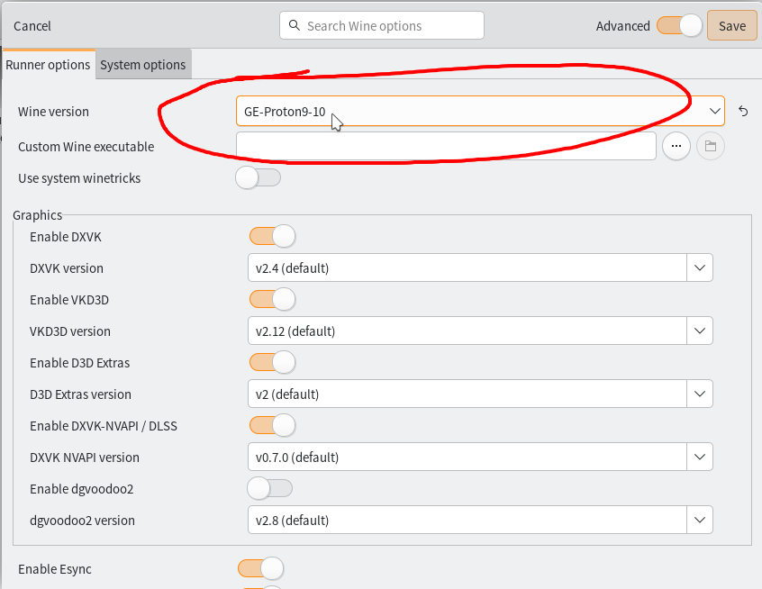
Then you need to set the correct environment variables.
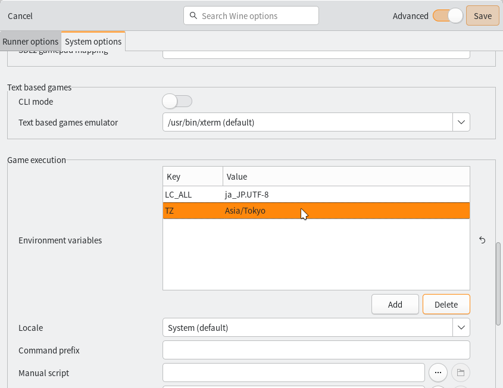
| Key | Value |
|---|---|
| LC_ALL | ja_JP.UTF-8 |
| TZ | Asia/Tokyo |
Now in Lutris, click the + in the top left corner to add a game, then in the window that pops up, choose Install a Windows game from an executable
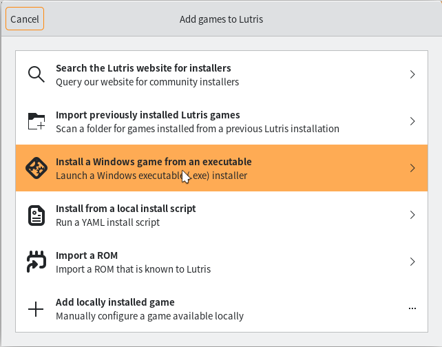
It is recommended to use Japanese locale when running visual novels, even on Windows.
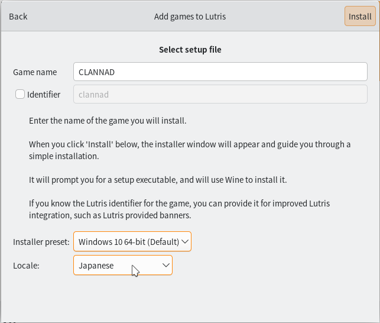
Set the Wine prefix directory. This is not the path for the install files.
USE A BLANK PREFIX. I suggest ~/Games/VNs. This prefix can be used for all your other VNs as long as the same Wine version is used- using a different Wine version on a prefix that was made with another version can actually render the prefix unusable!
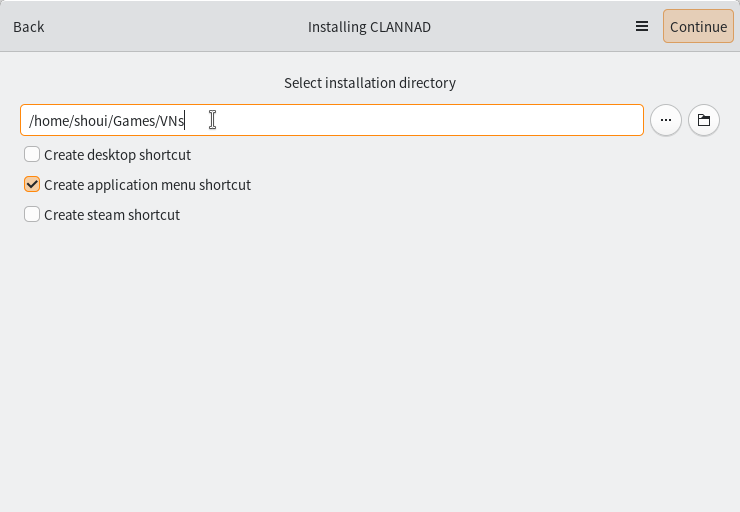
Choose the setup executable for the VN's installer. 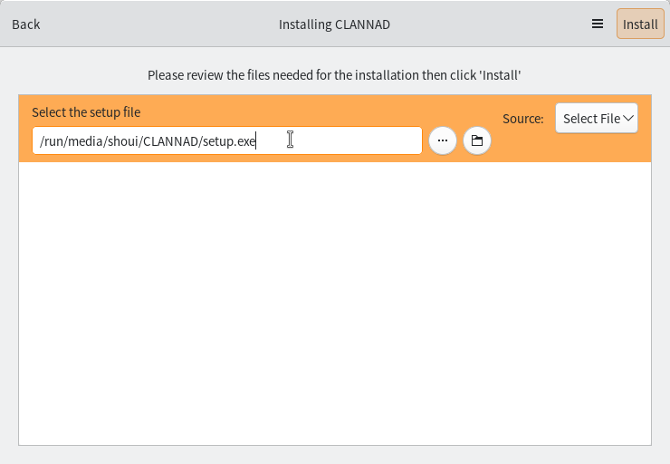
Proceed with the installation. I do not recommend installing DirectX from the VN installer, always say no to that. When complete, Lutris should automatically set the game executable path to the game's run executable defined in the installer info/registry.
After that you are all done and are ready to play the visual novel on Linux!
In Lutris, make sure you set the default Wine version for the Wine runner to the Proton-GE version you installed with ProtonUp-Qt.
Click the cog icon next to Wine under "Runners"
Set the Wine version to GE-Proton9-10.
Then you need to set the correct environment variables.
| Key | Value |
|---|---|
| LC_ALL | ja_JP.UTF-8 |
| TZ | Asia/Tokyo |
Now in Lutris, click the + icon in the top left corner, and choose Add locally installed game
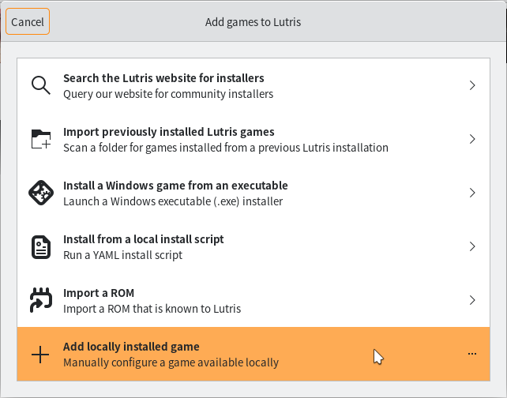
Set the runner to Wine. The runner settings should automatically be correct if you followed the previous steps.
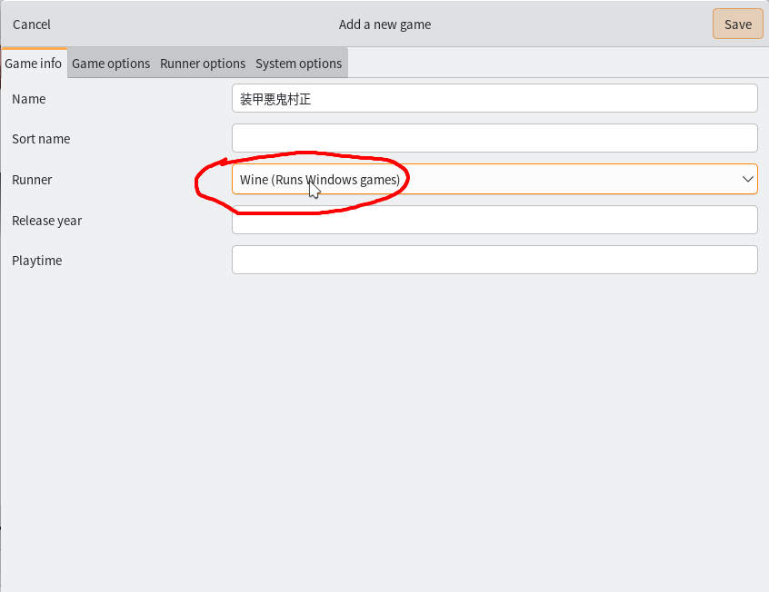
Now set the path to the game executable, and set the Wine prefix. This Wine prefix has to be a blank one if using Proton-GE on a prefix for the first time. After you run one VN in that prefix using that Proton-GE version, you can share the prefix for other VNs too. 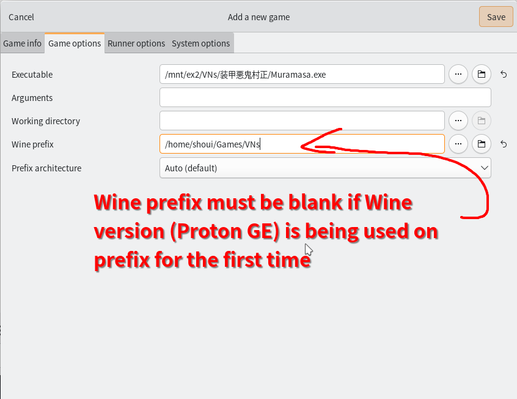
After that you are ready to play your VN on Linux!
Textractor¶
This is where things can get a little finnicky. There is no good way to launch 2 .exe's at the same time and have the two processes know of each other using Proton because of the way Proton is designed to only launch 1 program at a time in a single prefix. There are ways to get around this, and by far the best way I have found involves using a batch script with a custom Command Prompt.
Download Textractor¶
- Download Textractor at its GitHub Repository
Install Textractor¶
I used the "Run EXE inside Wine prefix" option in Lutris to install Textractor to the prefix. For some reason, trying to install it like a new game just doesn't work for me.
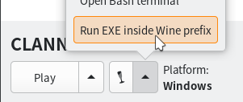
I used the "Install for all users" option when installing.
Set Up Textractor to launch with VN¶
This is a little complicated due to the nature of Proton, but you can get it working with a custom cmd.exe and a .bat file. You will need to use a .bat script for each VN you add to Lutris.
The cmd.exe in Wine does not function in the exact same way the Windows one does, however, the cmd.exe from ReactOS, in fact, does. So we will be downloading the cmd.exe from ReactOS and running that in Wine. You can take the .exe yourself from a ReactOS system at C:\ReactOS\system32\cmd.exe or download the one I have prepared below.
I recommend you put this at the root of your Wine prefix for easy access.
For example, /home/<user>/Games/VNs/cmd.exe
This guide will assume the cmd.exe is placed at the root of your Wine prefix.
Now, we need to edit a .bat script.
@echo off
:: Without this, Japanese file paths don't work correctly.
echo "Setting UTF-8..."
chcp 65001 > nul
echo "Launching VN..."
:: Edit the following lines to match your file paths. The Z:\ drive is mounted as your Linux filesystem.
cd /d "Z:/path/to/vn/folder/"
start <VN EXECUTABLE NAME>.exe
echo Launching Textractor...
:: This will work as is without editing if you installed Textractor to the prefix.
:: Use x86 for 32-bit executables and x64 for 64-bit executables.
cd /d "C:\users\steamuser\Desktop\Textractor\x86"
start Textractor.exe
exit
You need to edit the lines under "Launching VN..." to match your file paths. After that, you can save this as a .bat file in any directory and as any name you wish.
I suggest making a folder called scripts or something in your Wine prefix.
Unsure what architecture your VN is?
Use the Linux command file on the executable to find out if it is 32-bit or 64-bit.
Example: file VN.exe
If the output is:
VN.exe: PE32 executable (GUI) Intel 80386, for MS Windows
If the output is:
VN.exe: PE32+ executable (GUI) x86-64, for MS Windows
In Lutris, go on "Game Options" for the VN, change the executable to the ReactOS cmd.exe you downloaded, add the argument to start your .bat file in Arguments:
/k /path/to/startup_script.bat
scripts/ or something in the root of your Wine prefix for easy access.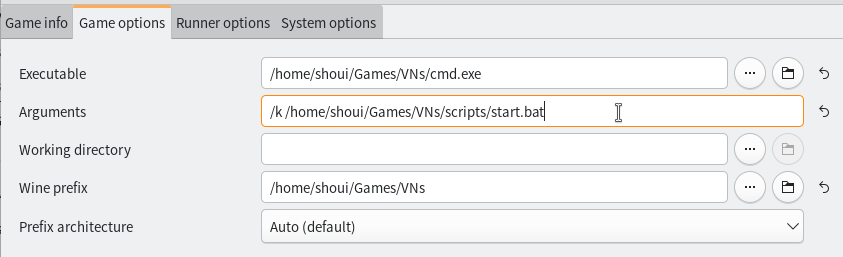
You will need to create a startup script for every VN you add, but this isn't complicated as it just involves editing file paths.
With this setup, the VN and Textractor should launch together.
Proceed to Learning Japanese with VNs for more information on how to use Textractor.
AlphaROMdiE¶
AlphaROMdiE is sort of an all-purpose NoDVD patch mainly for KEY visual novels. You can try using it when you can't find a NoDVD patch specifically for your visual novel. To use it, set the executable path to the AlphaROMdiE exe to set the options. After that, close it, and then edit the executable path to run AlphaROMdiE but with the VN's executable as an argument. For example: /path/to/vn/AlphaROMdiE.exe <VN_executable.exe>.
Alternatively you can configure AlphaROMdiE without running it on its own.
For the 1st option, you must create an empty file disable_conv in the same location as AlphaROMdiE.exe, for the 3rd option, you must create an empty file other_engine in the same location as AlphaROMdiE.exe. You can do this easily by doing:
touch disable_conv other_engine
Troubleshooting¶
Nitroplus Games Very Slow / other VN is very slow¶
Nitroplus VNs, such as Soukou Akki Muramasa, Phenomeno, Totono, Saya no Uta (untested) etc. may run very slowly when you run them with Proton.
You can run these games just fine using standard Wine. I tested these games with System (9.12) in Lutris on a new prefix. They ran fine, but the fonts weren't right. You can fix that by downloading and copying these fonts into your Wine prefix's fonts folder (drive_c/windows/Fonts).
Alternatively, you can continue to use Proton to run them, but usually, you have to disable Esync, Fsync and install xact into the Wine prefix using Winetricks.
Nitroplus VNs generally require some sort of special config to work properly, check ProtonDB for more information. If the game is on Steam, you can use the GAMEID=<steam game id> and STORE=steam in your Command prefix to make UMU automatically find patches for your VN.
Relevant Links:
Fonts do not look right¶
If this is the case, you need to download and import the fonts from Windows into your Wine prefix's font folder (drive_c/windows/Fonts).
You can download them here:
ゲームがインストールされていません / Game not installed error¶
This happens on games that rely on reading values in the Windows registry to check if the game is installed in the directory set at install time. If you see this error, perhaps the game files were moved, breaking the directory check, or you are using a different Wine prefix that does not have these registry values present. There is no good manual way to repair these values, or add them on an environment that doesn't already have them, therefore, I recommend backing up your savedata and re-installing the game using the Wine prefix you wish to play the game on.
It is actually not a Wine specific error, it happens on Windows too! These games are just made that way.
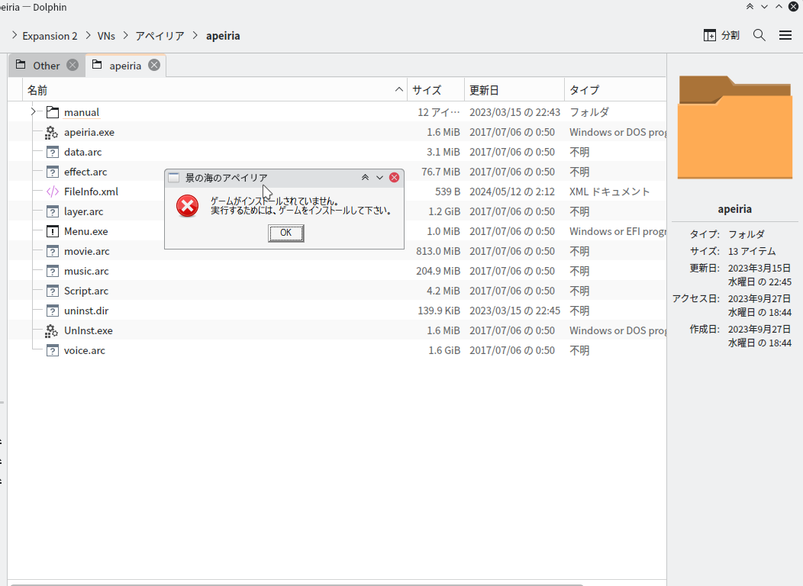
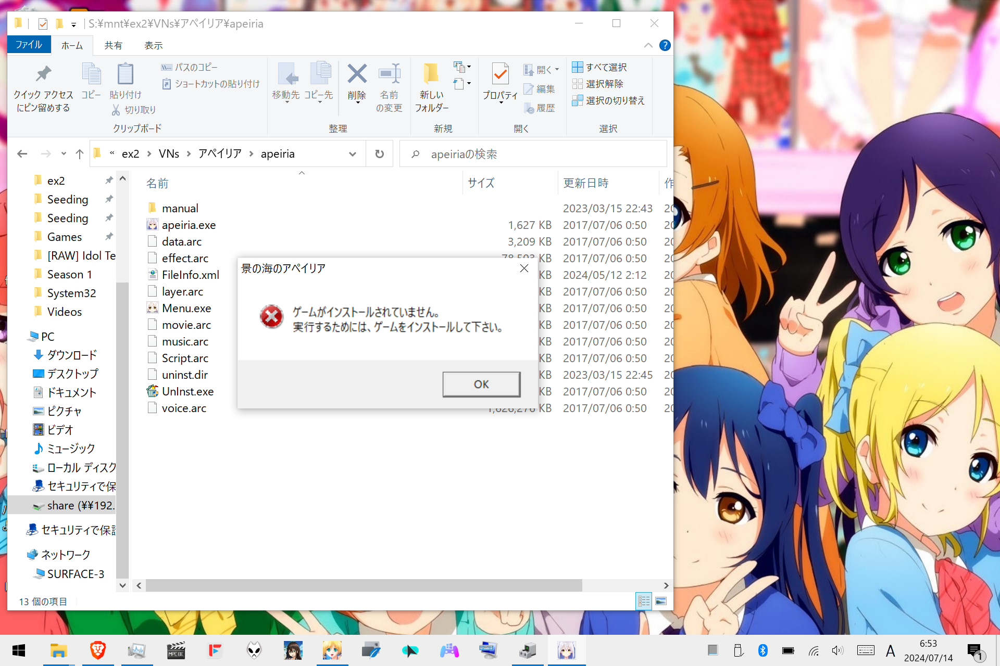
Weird scaling / stretched / mouse input not followed correctly.¶
Try putting the game into windowed mode and relaunching it.